library(tidyverse)
library(splines)
library(mgcv) #GAMsEjemplo para el tema: Más allá de la linealidad
En este documento vamos a simular datos sobre la relación entre la temperatura máxima diaria y la demanda de bicicletas compartidas en una ciudad.
La idea es construir un ejemplo donde la relación entre ambas variables sea claramente no lineal:
- en días fríos la demanda es baja;
- en días templados la demanda aumenta;
- en días muy calurosos vuelve a disminuir.
Con estos datos compararemos los siguientes métodos:
- Regresión polinómica.
- Funciones escalonadas.
- Splines de regresión.
- Splines suavizados.
- Regresión local (LOESS).
- Modelos aditivos generalizados (GAM).
Usaremos un conjunto de entrenamiento y otro de prueba para comparar el rendimiento predictivo mediante el RMSE.
1 Librerías
2 Generación de datos simulados
Supongamos que una ciudad dispone de un sistema de bicicleta compartida. Queremos estudiar cómo cambia el número de alquileres diarios en función de la temperatura máxima del día.
Para que el ejemplo sea realista, simulamos primero una secuencia anual de temperaturas y luego definimos una relación no lineal entre temperatura y demanda.
2.1 Simulación
set.seed(1234)
n <- 365
dia <- 1:n
# Temperatura máxima diaria simulada con patrón estacional
temp <- 18 + 10 * sin(2 * pi * (dia - 80) / 365) + rnorm(n, sd = 4)
temp <- round(pmin(pmax(temp, 0), 40),1)
# Función verdadera (desconocida en un problema real):
# la demanda sube con el buen tiempo y cae cuando hace demasiado calor.
mu <- 250 +
2400 * plogis((temp - 11) / 2.8) -
1700 * plogis((temp - 31) / 2.2)
# Añadimos ruido aleatorio
alquileres <- round(mu + rnorm(n, sd = 170))
alquileres <- pmax(alquileres, 50)
datos <- tibble(
dia = dia,
temp = temp,
alquileres = alquileres,
media_real = mu
)
glimpse(datos)Rows: 365
Columns: 4
$ dia <int> 1, 2, 3, 4, 5, 6, 7, 8, 9, 10, 11, 12, 13, 14, 15, 16, 17, …
$ temp <dbl> 3.4, 9.4, 12.6, 0.0, 10.1, 10.5, 6.2, 6.4, 6.3, 5.1, 6.8, 4…
$ alquileres <dbl> 643, 897, 1836, 288, 1641, 1240, 360, 679, 621, 368, 710, 4…
$ media_real <dbl> 399.1195, 1116.0848, 1783.4262, 296.3001, 1258.6591, 1342.9…2.2 Visualización inicial
ggplot(datos, aes(x = temp, y = alquileres)) +
geom_point(alpha = 0.65) +
geom_line(aes(y = media_real), linewidth = 1) +
labs(
title = "Datos simulados",
x = "Temperatura máxima (°C)",
y = "Número de alquileres diarios",
caption = "La línea representa la media verdadera usada en la simulación"
)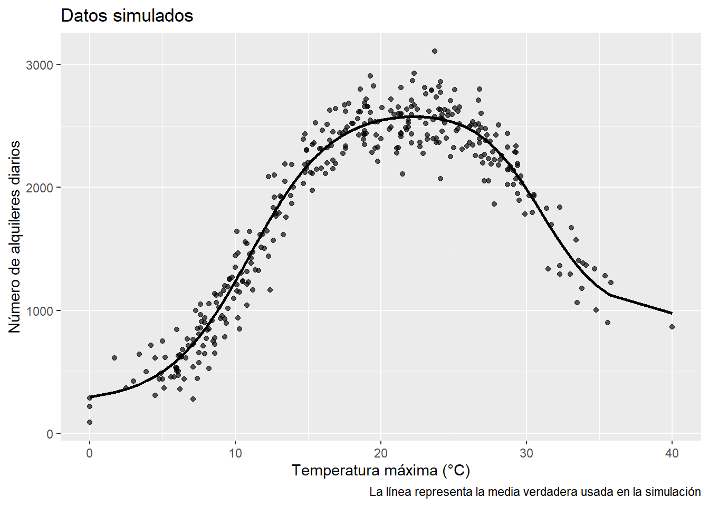
3 Separación en entrenamiento y prueba
set.seed(2026)
id_train <- sample(seq_len(nrow(datos)), size = round(0.7 * nrow(datos)))
train <- datos[id_train, ]
test <- datos[-id_train, ]
nrow(train)[1] 255nrow(test)[1] 110Usamos el RMSE para comparar modelos.
rmse <- function(obs, pred) {
sqrt(mean((obs - pred)^2))
}También creamos una malla de valores de temperatura para representar las curvas ajustadas.
grid <- tibble(temp = seq(min(datos$temp), max(datos$temp), length.out = 400))4 Regresión polinómica
grado_poly <- 1:5
# Malla de temperaturas para predicciones suaves
grid_temp <- tibble(
temp = seq(min(train$temp), max(train$temp), length.out = 300)
)
# Ajuste en train para cada grado
pred_train_poly <- map_dfr(grado_poly, function(g) {
mod <- lm(alquileres ~ poly(temp, degree = g, raw = TRUE), data = train)
grid_temp %>%
mutate(
alquileres_pred = predict(mod, newdata = grid_temp),
grado = factor(g)
)
})
ggplot() +
geom_point(data = train, aes(x = temp, y = alquileres), alpha = 0.6) +
geom_line(
data = pred_train_poly,
aes(x = temp, y = alquileres_pred),
linewidth = 1
) +
facet_wrap(~ grado, ncol = 2) +
labs(
title = "Ajuste de modelos polinómicos en train",
x = "Temperatura",
y = "Alquileres"
) +
theme_minimal()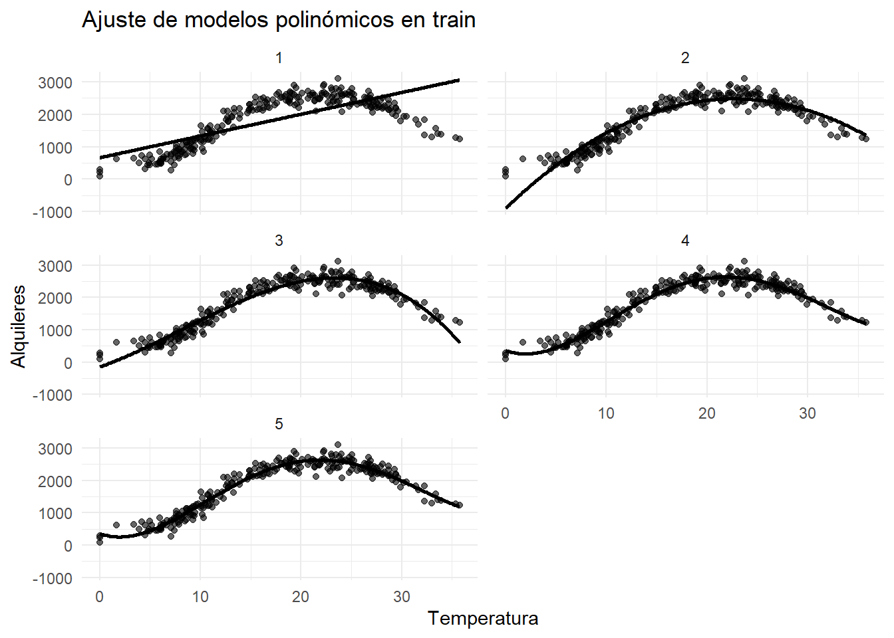
# RMSE en test para cada grado
res_poly <- map_dfr(grado_poly, function(g) {
mod <- lm(alquileres ~ poly(temp, degree = g, raw = TRUE), data = train)
tibble(
grado = g,
RMSE = rmse(test$alquileres, predict(mod, newdata = test))
)
})
res_poly# A tibble: 5 × 2
grado RMSE
<int> <dbl>
1 1 709.
2 2 271.
3 3 301.
4 4 199.
5 5 199.ggplot(res_poly, aes(x = grado, y = RMSE)) +
geom_line(linewidth = 0.8) +
geom_point(size = 2) +
scale_x_continuous(breaks = 1:5) +
labs(
title = "RMSE en test según el grado del polinomio",
x = "Grado",
y = "RMSE"
) +
theme_minimal()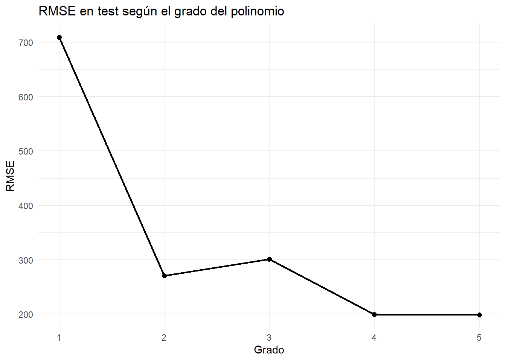
# Ajuste del mejor modelo
mod_poly_best <- lm(
alquileres ~ poly(temp, degree = 2, raw = TRUE),
data = train
)
pred_best_poly <- grid_temp %>%
mutate(
alquileres_pred = predict(mod_poly_best, newdata = grid_temp)
)
ggplot() +
geom_point(data = train, aes(temp, alquileres), alpha = 0.35, color = "grey50") +
geom_point(data = test, aes(temp, alquileres), alpha = 0.75, color = "steelblue") +
geom_line(
data = pred_best_poly,
aes(temp, alquileres_pred),
linewidth = 1.2,
color = "firebrick"
) +
labs(
title = paste("Mejor modelo polinómico: grado", 2),
subtitle = paste("RMSE en test =", round(min(res_poly$RMSE), 2)),
x = "Temperatura",
y = "Alquileres"
) +
theme_minimal()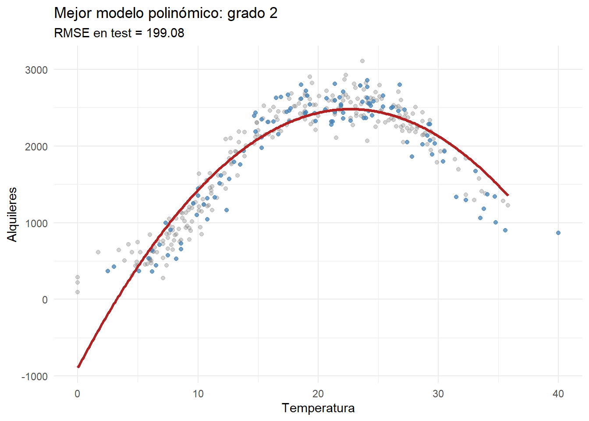
5 Funciones escalonadas
Las funciones escalonadas dividen la variable explicativa en intervalos y ajustan un nivel constante en cada tramo.
crear_cortes <- function(x, k) {
br <- quantile(
x,
probs = seq(0, 1, length.out = k + 1),
na.rm = TRUE
)
br <- unique(br)
# Asegura que ningún valor de test quede fuera
br[1] <- -Inf
br[length(br)] <- Inf
br
}
k_steps <- 3:8
# Malla para representar la función ajustada
grid_temp_steps <- tibble(
temp = seq(min(train$temp), max(train$temp), length.out = 300)
)Primero representamos cómo cambia el ajuste en train según el número de tramos.
pred_train_steps <- map_dfr(k_steps, function(k) {
br <- crear_cortes(train$temp, k)
train_aux <- train %>%
mutate(temp_step = cut(temp, breaks = br, include.lowest = TRUE))
grid_aux <- grid_temp_steps %>%
mutate(temp_step = cut(temp, breaks = br, include.lowest = TRUE))
mod <- lm(alquileres ~ temp_step, data = train_aux)
grid_aux %>%
mutate(
alquileres_pred = predict(mod, newdata = grid_aux),
tramos = factor(length(br) - 1)
)
})
ggplot() +
geom_point(data = train, aes(x = temp, y = alquileres), alpha = 0.6) +
geom_line(
data = pred_train_steps,
aes(x = temp, y = alquileres_pred),
linewidth = 1
) +
facet_wrap(~ tramos, ncol = 2) +
labs(
title = "Ajuste de funciones escalonadas en train",
x = "Temperatura",
y = "Alquileres",
caption = "Cada panel muestra el ajuste para un número distinto de tramos"
) +
theme_minimal()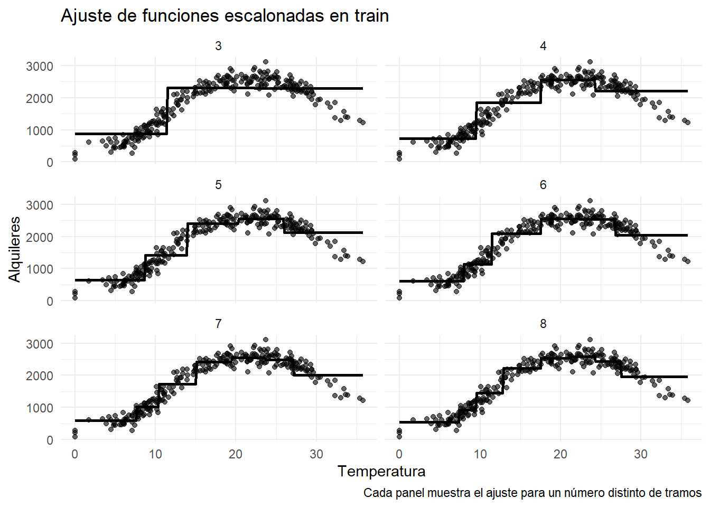
Ahora evaluamos en test qué número de tramos produce menor RMSE.
res_steps <- map_dfr(k_steps, function(k) {
br <- crear_cortes(train$temp, k)
train_aux <- train %>%
mutate(temp_step = cut(temp, breaks = br, include.lowest = TRUE))
test_aux <- test %>%
mutate(temp_step = cut(temp, breaks = br, include.lowest = TRUE))
mod <- lm(alquileres ~ temp_step, data = train_aux)
pred <- predict(mod, newdata = test_aux)
tibble(
tramos = length(br) - 1,
RMSE = rmse(test_aux$alquileres, pred)
)
}) %>%
distinct(tramos, .keep_all = TRUE) %>%
arrange(tramos)
res_steps# A tibble: 6 × 2
tramos RMSE
<dbl> <dbl>
1 3 469.
2 4 451.
3 5 352.
4 6 361.
5 7 347.
6 8 310.ggplot(res_steps, aes(x = tramos, y = RMSE)) +
geom_line(linewidth = 0.8) +
geom_point(size = 2) +
scale_x_continuous(breaks = res_steps$tramos) +
labs(
title = "Comparación de funciones escalonadas en test",
x = "Número de tramos",
y = "RMSE"
) +
theme_minimal()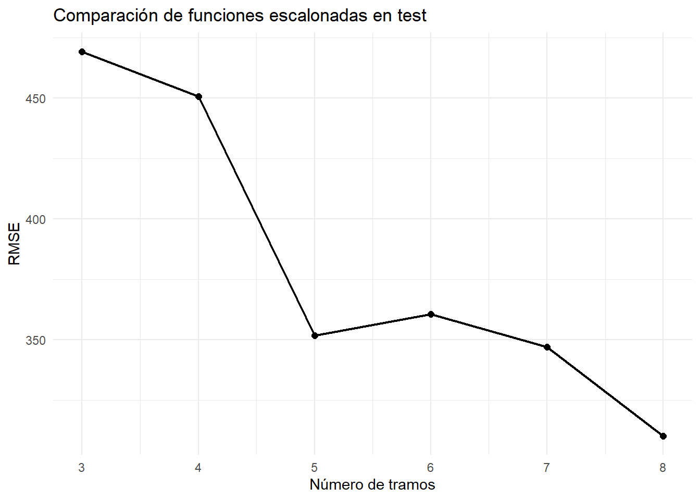
Finalmente, seleccionamos el mejor modelo y lo representamos junto con los datos de test.
best_k_steps <- res_steps %>%
arrange(RMSE) %>%
slice(1) %>%
pull(tramos)
best_k_steps[1] 8br_best_steps <- crear_cortes(train$temp, best_k_steps)
train_best_steps <- train %>%
mutate(temp_step = cut(temp, breaks = br_best_steps, include.lowest = TRUE))
grid_best_steps <- grid_temp_steps %>%
mutate(temp_step = cut(temp, breaks = br_best_steps, include.lowest = TRUE))
mod_steps_best <- lm(alquileres ~ temp_step, data = train_best_steps)
pred_best_steps <- grid_best_steps %>%
mutate(
alquileres_pred = predict(mod_steps_best, newdata = grid_best_steps)
)
ggplot() +
geom_point(data = train, aes(temp, alquileres), alpha = 0.35, color = "grey50") +
geom_point(data = test, aes(temp, alquileres), alpha = 0.75, color = "steelblue") +
geom_line(
data = pred_best_steps,
aes(temp, alquileres_pred),
linewidth = 1.2,
color = "firebrick"
) +
labs(
title = paste("Mejor función escalonada:", best_k_steps, "tramos"),
subtitle = paste("RMSE en test =", round(min(res_steps$RMSE), 2)),
x = "Temperatura",
y = "Alquileres",
caption = "Gris: train | Azul: test | Rojo: predicción del mejor modelo"
) +
theme_minimal()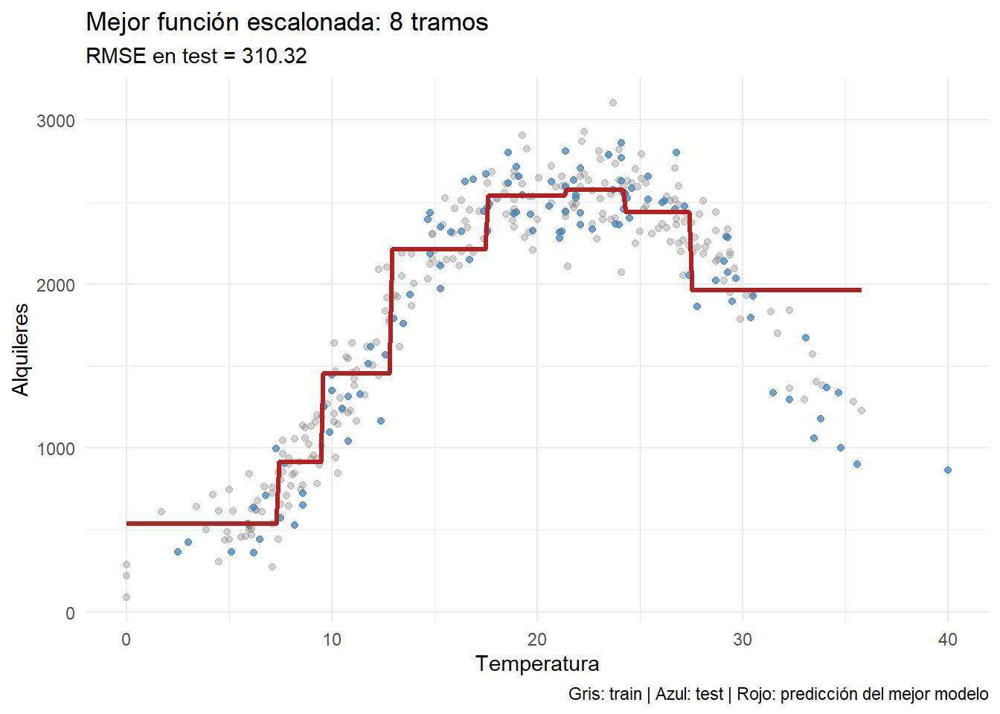
6 Splines de regresión
Los splines de regresión permiten modelar relaciones no lineales de forma flexible sin recurrir a un único polinomio global para todo el rango de la variable explicativa. La idea consiste en dividir el rango de la variable en varios tramos y ajustar en cada uno un polinomio de bajo grado. Estos tramos se unen en puntos llamados nodos, pero no lo hacen de forma brusca: se impone continuidad y suavidad en esos puntos, de modo que la curva final sea continua y visualmente natural.
En esta sección usaremos una base B-spline. En lugar de construir directamente la curva tramo a tramo, una B-spline representa la función ajustada como combinación lineal de varias funciones base suaves y locales. Esto hace que el ajuste sea más estable numéricamente y que pequeñas variaciones en una zona del eje \(x\) no afecten innecesariamente a toda la curva.
El parámetro que vamos a comparar aquí es el número de grados de libertad (df), que controla la flexibilidad del spline: - con pocos grados de libertad, la curva es más rígida; - con más grados de libertad, la curva puede adaptarse mejor a curvaturas complejas; - si usamos demasiados, existe riesgo de sobreajuste.
df_splines <- 4:8
grid_temp_bs <- tibble(
temp = seq(min(train$temp), max(train$temp), length.out = 300)
)Primero representamos cómo cambia el ajuste en train al variar los grados de libertad.
pred_train_bs <- map_dfr(df_splines, function(df_) {
mod <- lm(alquileres ~ bs(temp, df = df_), data = train)
grid_temp_bs %>%
mutate(
alquileres_pred = predict(mod, newdata = grid_temp_bs),
df = factor(df_)
)
})
ggplot() +
geom_point(data = train, aes(x = temp, y = alquileres), alpha = 0.6) +
geom_line(
data = pred_train_bs,
aes(x = temp, y = alquileres_pred),
linewidth = 1
) +
facet_wrap(~ df, ncol = 2) +
labs(
title = "Ajuste de splines de regresión en train",
x = "Temperatura",
y = "Alquileres",
caption = "Cada panel muestra el ajuste de un spline B-spline con distinto df"
) +
theme_minimal()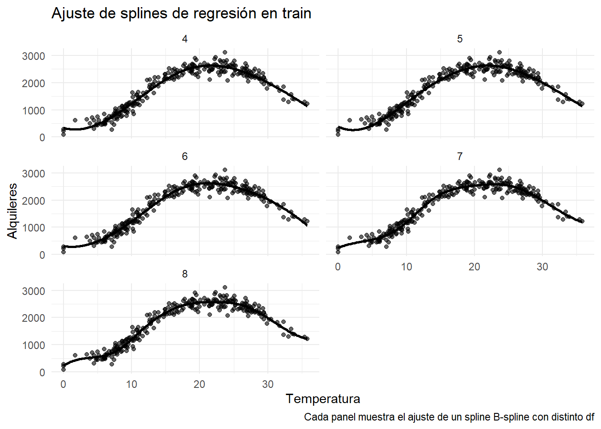
Ahora evaluamos su capacidad predictiva en test mediante el RMSE.
res_bs <- map_dfr(df_splines, function(df_) {
mod <- lm(alquileres ~ bs(temp, df = df_), data = train)
pred <- predict(mod, newdata = test)
tibble(
df = df_,
RMSE = rmse(test$alquileres, pred)
)
})
res_bs# A tibble: 5 × 2
df RMSE
<int> <dbl>
1 4 201.
2 5 201.
3 6 211.
4 7 192.
5 8 199.Representamos el RMSE en función de los grados de libertad.
ggplot(res_bs, aes(x = df, y = RMSE)) +
geom_line(linewidth = 0.8) +
geom_point(size = 2) +
scale_x_continuous(breaks = df_splines) +
labs(
title = "Comparación de splines de regresión en test",
x = "Grados de libertad",
y = "RMSE"
) +
theme_minimal()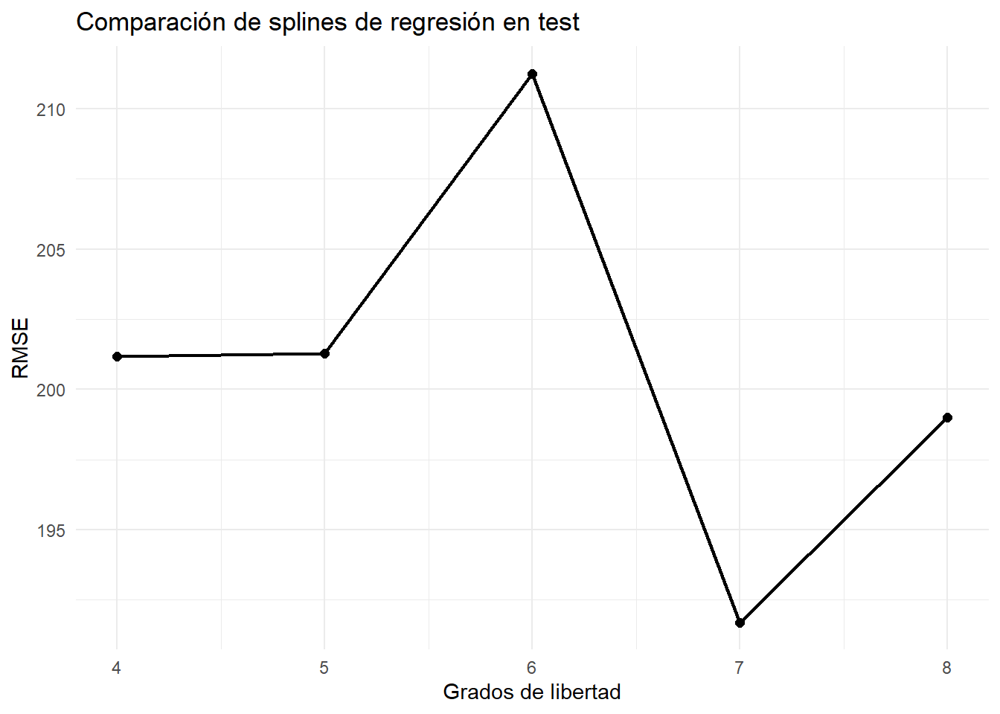
Seleccionamos el spline con menor RMSE y lo representamos junto con los datos de train y test.
best_df_bs <- res_bs %>%
arrange(RMSE) %>%
slice(1) %>%
pull(df)
best_df_bs[1] 7mod_bs <- lm(alquileres ~ bs(temp, df = best_df_bs), data = train)
pred_best_bs <- grid_temp_bs %>%
mutate(
alquileres_pred = predict(mod_bs, newdata = grid_temp_bs)
)
ggplot() +
geom_point(data = train, aes(temp, alquileres), alpha = 0.35, color = "grey50") +
geom_point(data = test, aes(temp, alquileres), alpha = 0.75, color = "steelblue") +
geom_line(
data = pred_best_bs,
aes(temp, alquileres_pred),
linewidth = 1.2,
color = "firebrick"
) +
labs(
title = paste("Mejor spline de regresión: df =", best_df_bs),
subtitle = paste("RMSE en test =", round(min(res_bs$RMSE), 2)),
x = "Temperatura",
y = "Alquileres",
caption = "Gris: train | Azul: test | Rojo: predicción del mejor spline"
) +
theme_minimal()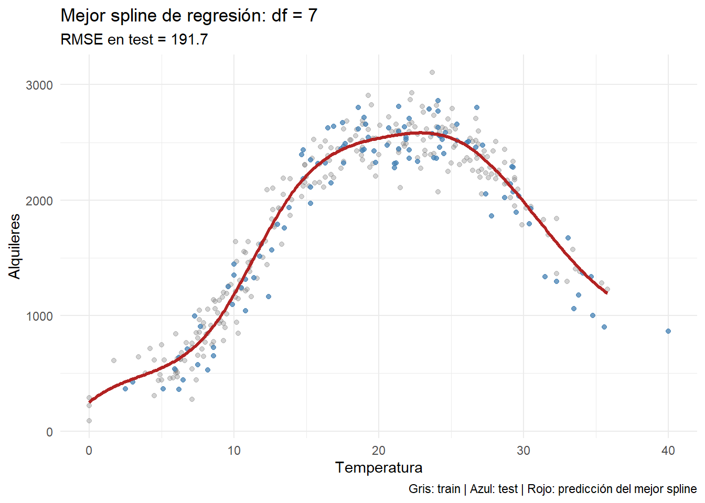
En este ejemplo, el mejor modelo ha sido el spline de regresión con 7 grados de libertad, porque es el que presenta el menor RMSE en test.
7 4. Splines suavizados
Los splines suavizados también permiten modelar relaciones no lineales, pero lo hacen de una forma distinta a los splines de regresión. En lugar de fijar explícitamente un número de nodos o unos grados de libertad concretos y ajustar después la curva, los splines suavizados buscan directamente una curva que logre un buen compromiso entre dos objetivos:
- ajustarse bien a los datos observados;
- mantener una forma suave, evitando oscilaciones innecesarias.
Ese equilibrio se controla mediante un parámetro de penalización. Si la penalización es pequeña, la curva sigue más de cerca a los datos y resulta más flexible. Si la penalización es grande, se penalizan las curvaturas excesivas y la curva se vuelve más lisa. En smooth.spline(), este equilibrio puede elegirse automáticamente mediante validación cruzada, de modo que el propio procedimiento selecciona el nivel de suavidad que mejor capacidad predictiva parece tener.
# Ajuste del spline suavizado usando validación cruzada
mod_ss <- smooth.spline(
x = train$temp,
y = train$alquileres,
cv = TRUE
)
mod_ssCall:
smooth.spline(x = train$temp, y = train$alquileres, cv = TRUE)
Smoothing Parameter spar= 0.8411426 lambda= 0.001438673 (14 iterations)
Equivalent Degrees of Freedom (Df): 8.045514
Penalized Criterion (RSS): 4192971
PRESS(l.o.o. CV): 28638.92El objeto ajustado informa, entre otras cosas, del nivel de suavidad elegido. En particular, puede resumirse mediante los grados de libertad efectivos: valores pequeños corresponden a curvas más rígidas, mientras que valores mayores indican más flexibilidad.
Primero representamos la curva ajustada sobre el conjunto de entrenamiento.
grid_temp_ss <- tibble(
temp = seq(min(train$temp), max(train$temp), length.out = 300)
)
pred_ss_train <- tibble(
temp = grid_temp_ss$temp,
alquileres_pred = predict(mod_ss, x = grid_temp_ss$temp)$y
)
ggplot() +
geom_point(data = train, aes(x = temp, y = alquileres), alpha = 0.6) +
geom_line(
data = pred_ss_train,
aes(x = temp, y = alquileres_pred),
linewidth = 1.2,
color = "firebrick"
) +
labs(
title = "Ajuste del spline suavizado en train",
subtitle = paste("Grados de libertad efectivos =", round(mod_ss$df, 2)),
x = "Temperatura",
y = "Alquileres",
caption = "La curva roja muestra el nivel de suavidad elegido por validación cruzada"
) +
theme_minimal()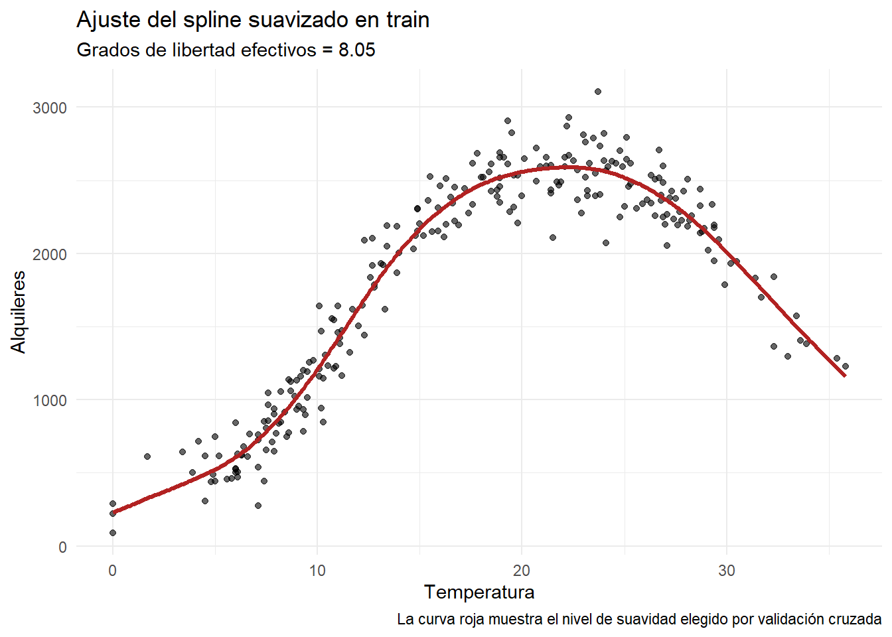
Ahora evaluamos su capacidad predictiva en el conjunto de prueba.
pred_ss_test <- predict(mod_ss, x = test$temp)$y
rmse_ss <- rmse(test$alquileres, pred_ss_test)
rmse_ss[1] 194.3891Finalmente, representamos el ajuste elegido junto con los datos de train y test.
ggplot() +
geom_point(data = train, aes(temp, alquileres), alpha = 0.35, color = "grey50") +
geom_point(data = test, aes(temp, alquileres), alpha = 0.75, color = "steelblue") +
geom_line(
data = pred_ss_train,
aes(temp, alquileres_pred),
linewidth = 1.2,
color = "firebrick"
) +
labs(
title = "Spline suavizado ajustado por validación cruzada",
subtitle = paste(
"df efectivos =", round(mod_ss$df, 2),
"| RMSE en test =", round(rmse_ss, 2)
),
x = "Temperatura",
y = "Alquileres",
caption = "Gris: train | Azul: test | Rojo: predicción del spline suavizado"
) +
theme_minimal()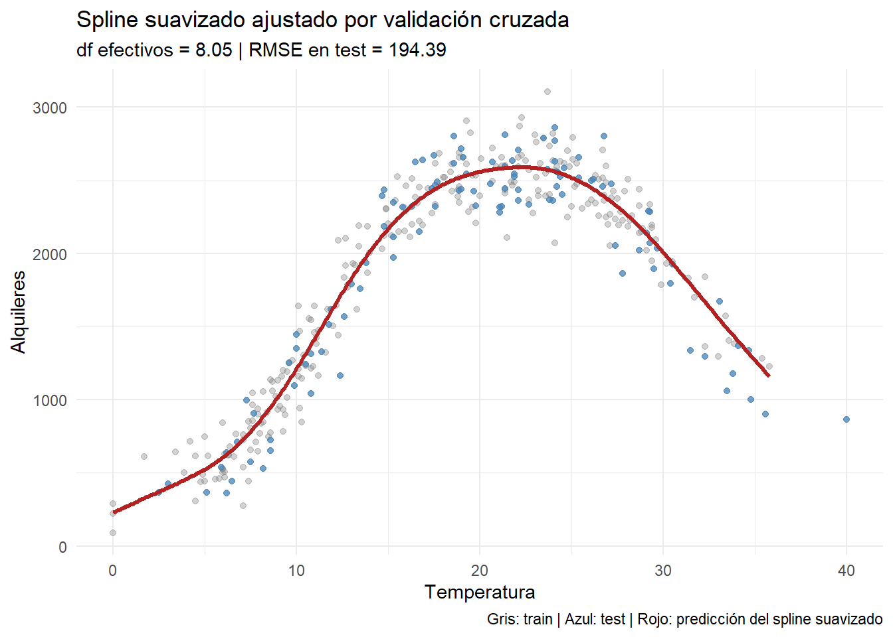
El spline suavizado reproduce una relación no lineal clara: los alquileres aumentan con la temperatura hasta alcanzar un máximo en torno a los 20–25 grados, y después disminuyen para temperaturas más altas. La curva estimada es suave y no presenta oscilaciones innecesarias, lo que sugiere un buen equilibrio entre flexibilidad y capacidad de generalización. En este ajuste, la validación cruzada selecciona 8.05 grados de libertad efectivos y se obtiene un RMSE en test de 194.39.
8 Regresión local (LOESS)
La regresión local, también conocida como LOESS (Locally Estimated Scatterplot Smoothing), es un método flexible para modelar relaciones no lineales sin imponer una forma funcional global concreta. En lugar de ajustar una única curva para todo el rango de la variable explicativa, LOESS ajusta pequeños modelos locales alrededor de cada punto del eje \(x\), utilizando únicamente las observaciones cercanas.
La idea es estimar la respuesta en un valor concreto de temperatura, el método selecciona una vecindad de observaciones próximas, asigna mayor peso a las más cercanas y ajusta con ellas un polinomio de bajo grado. Repitiendo este proceso a lo largo de todo el rango de la variable se obtiene una curva suave que puede adaptarse bien a patrones complejos.
El parámetro más importante en LOESS es span, que controla el tamaño de la vecindad usada en cada ajuste local:
- un
spanpequeño utiliza pocos datos cercanos, por lo que la curva es más flexible; - un
spangrande utiliza una vecindad más amplia, por lo que la curva es más suave; - si
spanes demasiado pequeño, el modelo puede sobreajustarse; - si es demasiado grande, puede perder detalles importantes de la relación.
En este ejemplo compararemos varios valores de span para estudiar cómo cambia el ajuste y cuál ofrece mejor capacidad predictiva en el conjunto de prueba.
spans <- c(0.20, 0.35, 0.50, 0.65)
grid_temp_loess <- tibble(
temp = seq(min(train$temp), max(train$temp), length.out = 300)
)Primero representamos cómo cambia el ajuste en train al variar span.
pred_train_loess <- map_dfr(spans, function(s) {
mod <- loess(
alquileres ~ temp,
data = train,
span = s,
degree = 2,
control = loess.control(surface = "direct")
)
tibble(
temp = grid_temp_loess$temp,
alquileres_pred = predict(mod, newdata = grid_temp_loess),
span = factor(s)
)
})
ggplot() +
geom_point(data = train, aes(x = temp, y = alquileres), alpha = 0.6) +
geom_line(
data = pred_train_loess,
aes(x = temp, y = alquileres_pred),
linewidth = 1
) +
facet_wrap(~ span, ncol = 2) +
labs(
title = "Ajuste de modelos LOESS en train",
subtitle = "Comparación para distintos valores de span",
x = "Temperatura",
y = "Alquileres",
caption = "Cada panel muestra la curva ajustada con un valor distinto de span"
) +
theme_minimal()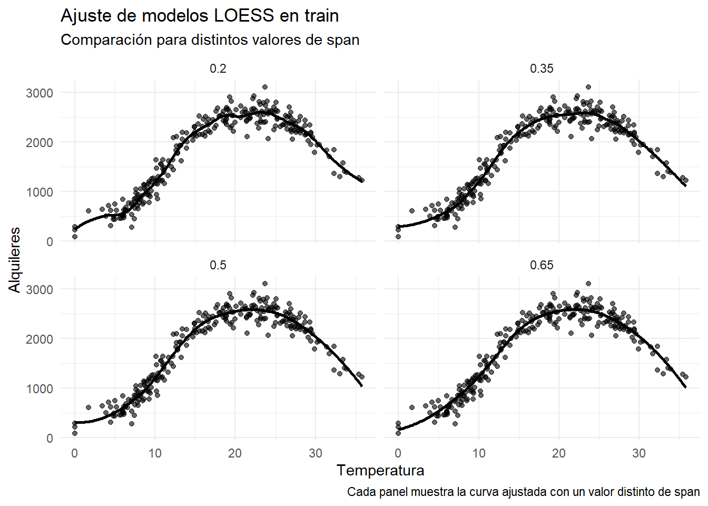
Ahora evaluamos su capacidad predictiva en test mediante el RMSE.
res_loess <- map_dfr(spans, function(s){
mod <- loess(
alquileres ~ temp,
data = train,
span = s,
degree = 2,
control = loess.control(surface = "direct")
)
pred <- predict(mod, newdata = test)
tibble(
span = s,
RMSE = rmse(test$alquileres[!is.na(pred)], pred[!is.na(pred)]),
n_NA = sum(is.na(pred))
)
})
res_loess# A tibble: 4 × 3
span RMSE n_NA
<dbl> <dbl> <int>
1 0.2 191. 0
2 0.35 196. 0
3 0.5 206. 0
4 0.65 215. 0Representamos el RMSE obtenido para cada valor de span.
ggplot(res_loess, aes(x = span, y = RMSE)) +
geom_line(linewidth = 0.8) +
geom_point(size = 2) +
scale_x_continuous(breaks = spans) +
labs(
title = "Comparación de modelos LOESS en test",
subtitle = "RMSE según el valor de span",
x = "Span",
y = "RMSE"
) +
theme_minimal()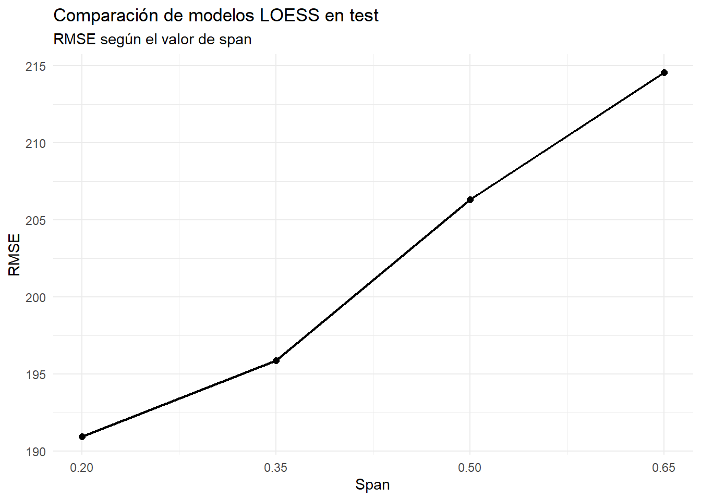
Seleccionamos el modelo con menor RMSE y lo representamos junto con los datos de train y test.
best_span <- res_loess %>%
arrange(RMSE) %>%
slice(1) %>%
pull(span)
best_span[1] 0.2mod_loess <- loess(
alquileres ~ temp,
data = train,
span = best_span,
degree = 2
)
pred_best_loess <- grid_temp_loess %>%
mutate(
alquileres_pred = predict(mod_loess, newdata = grid_temp_loess)
)
ggplot() +
geom_point(data = train, aes(temp, alquileres), alpha = 0.35, color = "grey50") +
geom_point(data = test, aes(temp, alquileres), alpha = 0.75, color = "steelblue") +
geom_line(
data = pred_best_loess,
aes(temp, alquileres_pred),
linewidth = 1.2,
color = "firebrick"
) +
labs(
title = paste("Mejor modelo LOESS: span =", best_span),
subtitle = paste("RMSE en test =", round(min(res_loess$RMSE), 2)),
x = "Temperatura",
y = "Alquileres",
caption = "Gris: train | Azul: test | Rojo: predicción del mejor modelo LOESS"
) +
theme_minimal()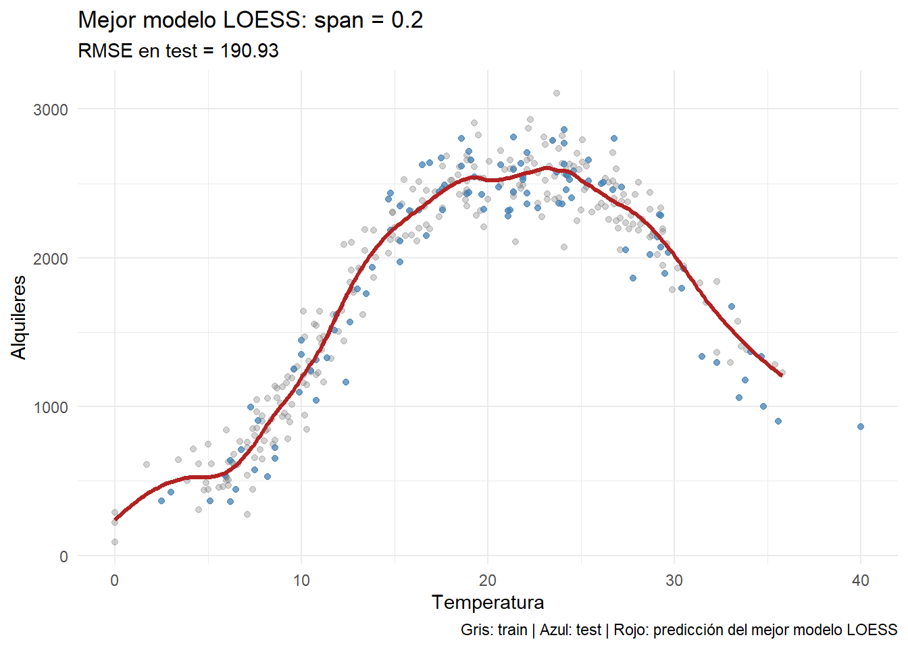
El valor \(\text{RMSE}_{\text{test}} = 190.93\) es el error medio de unas 191 unidades de alquiler respecto al valor real. Relativamente pequeño en comparación con el rango total (≈ 0–3000). Indica una buena capacidad de generalización, especialmente para un modelo no paramétrico.
9 6. Modelo aditivo generalizado (GAM)
Los GAM permiten modelar relaciones no lineales mediante funciones suaves estimadas a partir de los datos. En este ejemplo usamos un único término suave para la temperatura.
mod_gam <- gam(alquileres ~ s(temp, k = 10), data = train, method = "REML")
summary(mod_gam)
Family: gaussian
Link function: identity
Formula:
alquileres ~ s(temp, k = 10)
Parametric coefficients:
Estimate Std. Error t value Pr(>|t|)
(Intercept) 1826.09 10.43 175.2 <2e-16 ***
---
Signif. codes: 0 '***' 0.001 '**' 0.01 '*' 0.05 '.' 0.1 ' ' 1
Approximate significance of smooth terms:
edf Ref.df F p-value
s(temp) 7.939 8.706 585.5 <2e-16 ***
---
Signif. codes: 0 '***' 0.001 '**' 0.01 '*' 0.05 '.' 0.1 ' ' 1
R-sq.(adj) = 0.953 Deviance explained = 95.4%
-REML = 1671 Scale est. = 27714 n = 255pred_gam_test <- predict(mod_gam, newdata = test)
rmse_gam <- rmse(test$alquileres, pred_gam_test)
rmse_gam[1] 192.0902